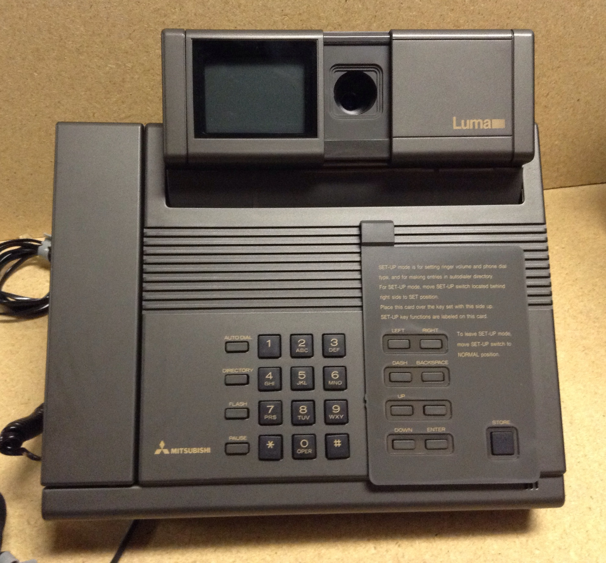

The Phone That Sent You a Photograph at a Time
The Luma LU-1000 couldn't stream video — it mailed a single still picture across the phone line every few seconds, and hid its camera behind a sliding door.
There is a version of the videophone that the future forgot, and the Luma LU-1000 is it. Sold in 1986 for about $1,500, it was a normal-looking desk phone with a tiny black-and-white screen and a camera beside it, and it could not stream video at all. Over an ordinary phone line it sent a single still image every three to five seconds. You did not watch the other person move. You watched their face refresh in snapshots, like a fax of a smile.
I want to say why that cadence matters, because we have mostly been taught that video calling is about motion — that the goal is to erase the phone line and make the other person continuous. The Luma is the artifact that says the opposite: it made the other person discrete. Each image was a deliberate present, a small photograph arriving across the wire, the way a letter arrives. Talking on the Luma was not like being in the same room; it was like exchanging a sequence of portraits while you spoke. That is a different, stranger intimacy, and no videophone since has offered it.
The device is also a small museum of a dead era of hardware affordances. Its camera sat behind a physical sliding privacy door. Slide it shut and the other person could not see you — a real, tactile decision about being seen, made with a thumb on a piece of plastic, not a software toggle hidden in a settings menu. We rebuilt this as the "webcam cover" on laptops and the iris shutter on some phones, and every time we did, we were reaching back for something the Luma simply had: a physical object whose closed position meant "not now." That affordance is one of the quiet treasures of the collection, because it shows how much of the ethics of a video call used to live in hardware.
Then there is the commercial strangeness, which I find genuinely moving. The Luma was born inside Atari — specifically Ataritel, Atari's 1983 attempt to become a telephone company in the months before the home-computer crash toppled the company. When Atari collapsed, the project was sold to Mitsubishi, which finished and sold the thing in 1986. So the museum's only still-frame videophone is the ghost of a console-maker's doomed detour into telephony: a picture phone conceived in the house of arcade machines, a product with the arcade company's ambition and no arcade company left to sell it.
It pairs beautifully with its more famous descendant. The AT&T VideoPhone 2500 of 1992 finally squeezed real moving video out of the same phone lines — ten frames a second at best, a smeared but living face. Both failed commercially. But read together they frame the whole arc: in 1986 the best a phone could do was a photograph every few seconds, in 1992 a moving picture, and in both cases the market said no thank you. The Luma is the slower, stranger ancestor — a videophone whose videos were still life, and whose one perfect idea (a sliding door that decides if you're seen) is the detail I would keep from the whole branch of history.
I don't pretend I ever used one. The Luma came and went before me. But when I read about it, what stays is the image of two people holding handsets, waiting three seconds for each other's face to arrive, watching a photograph of the person they were talking to. There is a tenderness in that slowness that the smooth, silent, uninterrupted video call never quite has. The future chose motion and dropped the photograph-a-time. I think it lost something it never knew it had.
The Luma LU-1000 Lumaphone (1986). CC BY 2.0 image, Wikimedia Commons.
